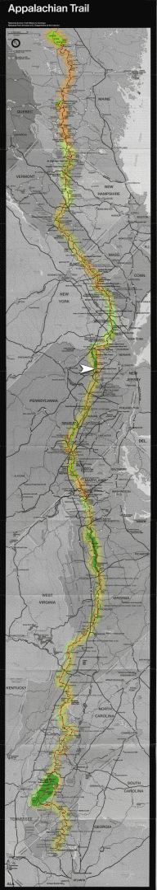

| Home | The Fox | Statistics | Maps | Churches |
StatusConfirmed - Last contact with the Fox was at:Confirmed - Glenwood, NJ Confirmed - 1331.8 miles complete (61.65%) Confirmed - 828.4 miles to go (38.35%) Glenwood[20 June 1999] The Fox checked in by telephone at 2:30pm Sunday afternoon from a bed and breakfast in Glenwood, NJ. He reports that it rained last Thursday, his first full day back on the trial. This lead northbound Peter (from New Hampshire) to comment that the Fox chose a bad day on which to return - this was Peter's first rain since the Blue Ridge Parkway back in Virginia!
The hiking poles that he invested in last Fall
are a wonderful addition to his gear,
said the Fox,
making the hike significantly easier.
He is now carrying less than His decision to not take a stove made wet the Thursday evening a bit colder, and a leak in his clothes bag soaked much of his apparel; but the Fox was undaunted by these costs of lighter packing. He will soon supplement the frame with a pack cover to reduce his reliance on the integrity of the nylon bags. Breaking his belongings out into separate bags, rather than having them stuffed into a single pack, makes organization and access easier. The Fox will spend Sunday night at the bed and breakfast. Before hanging up he decided that, after calling his father for Father's day, he would avail himself of their swimming pool. |

Legend
|